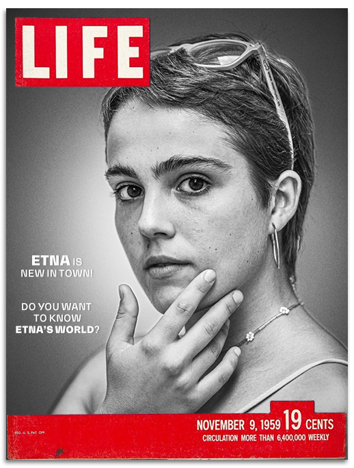

 ¡Esta es mi portada! ¿Qué os parece? Lógicamente, no fui portada en el noviembre del 59 jajaja, pero este es el juego que te propongo, imaginarte como sería, y sobre todo, ¿por qué deberías aparecer en ella?
¿Cuál? ¿Por qué motivo? Yo he escogido la revista LIFE porque es conocida por la belleza de sus portadas, donde a lo largo del S.XX han aparecido fotografías buenísimas de temas de actualidad y retratos preciosos. ¡Me encantaría que mi portada fuera la de la Revista Life!
¿Cuál sería el mensaje o titular que aparecería en tu portada? ¡Todas tenemos infinitos motivos (positivos) para ser portada! El mío, claro, como soy nueva por aquí, habla de esto. Pero, y tú, ¿Por qué motivo podrías salir en la portada? Seguro que habría mil motivos, ¡sólo tienes que creértelos!
Hazte una selfiey mírala un rato. ¿Qué ves? ¿Quién ves? ¿Como es esta persona?, ¿Qué transmite?, ¿Cómo es físicamente?, ¿Como se muestra emocionalmente? En mi caso, En la foto, saldría con una postura sugerente, una mirada que denote mucha intimidad, y a la vez firmeza, creo que soy una persona fuerte, aunque evidentemente, muchas veces me siento vulnerable. Quiero que el fotógrafo, con un solo clic, capte toda esta esencia que tengo. Yo soy así.